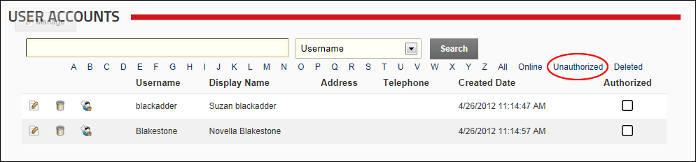

Filtering User Accounts by Unauthorized Users
How to filter user accounts to display only unauthorized users using the User Accounts module. Unauthorized user accounts display the Unchecked icon in the Authorized column.
- Navigate to Admin >
 User Accounts - OR - Go to a User Accounts module.
User Accounts - OR - Go to a User Accounts module.
- Click the Unauthorized link. By default, the first ten ( 10 ) unauthorized user accounts are listed in alphabetical order by username. Use the Pager Control to navigate to further records. See "About the Pager"

Filtering User Accounts by Unauthorized User Accounts